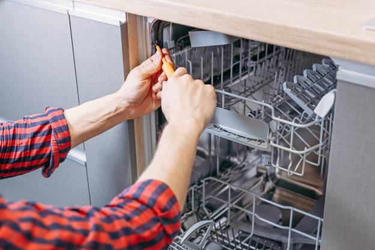
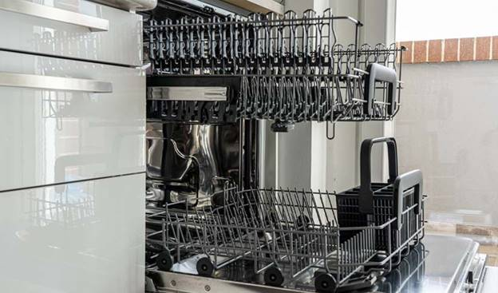

مقاله فنی درباره ماشین ظرفشویی
خدمات این شرکت برای تعمیر ظرفشویی شما
نصب اصولی و
بر طبق استاندارد ماشین ظرفشویی اهمیت بسیاری
دارد، زیرا می تواند از بروز برخی مشکلات رایج
جلوگیری نماید. همچنین مراقبت و نگهداری از دستگاه
با انجام سرویس های دوره ای توسط تکنسین حاذق، می تواند مشکلات جزئی و ایرادات دستگاه را
رفع نموده و به عمر مفید آن بیافزاید. تعمیر ماشین
ظرفشویی نیز، به هنگام بروز مشکلی در دستگاه که سبب
کارکرد غیر نرمال آن شده است، توسط تعمیرکار متخصص لازم بوده و باید
سریعا پیگیری شود تا از تشدید مشکل
جلوگیری نماید.
سر و صدای
زیاد ماشین ظرفشویی کار نکردن دکمه های ظرفشویی خشک نشدن ظروف در
دستگاه نشتی یا آبریزش ظرفشویی عدم پخش
شوینده در داخل دستگاه بسته نشدن درب ظرفشویی شروع نشدن
سیکل شستشو و…
مشکلات رایج ماشین های
ظرفشویی متفاوت و بسیارند اما همگی قابل
تعمیر هستند. اگر هر یک از موارد بالا و یا موارد
دیگری را در ظرفشویی خود مشاهده کردید، بلافاصله
برای تعمیر دستگاه خود اقدام کرده و با ما تماس
بگیرید.
چرا ظرفشویی آب را تخلیه نمیکند؟ نحوه تعمیر ماشین ظرفشویی بوش به چه صورت است؟

اگر دستگاه مشکل تخلیه آب دارد، می توانید اقدامات زیر را برای تعمیر ظرفشویی بوش در نظر بگیرید:
- ابتدا درب ماشین ظرفشویی را باز کنید و قفسه پایینی را بیرون بکشید و کنار بگذارید.
- قسمت بالایی فیلتر را بردارید و آن را در خلاف جهت عقربه های ساعت بچرخانید تا یک چهارم کامل بچرخد و سپس آن را بیرون بکشید.
- باید لوله را زیر شیر آب بشویید و کنار بگذارید تا خشک شود.
- لازم است آب داخل مخزن را خالی کرده و سپس آب باقیمانده را چند بار با حوله پاک کنید.
- پیچ های نگهدارنده پوشش پمپ تخلیه را در سمت چپ کف مخزن تخلیه قرار دهید. آنها را با استفاده از پیچ گوشتی تورکس شماره 5 باز کنید.
- در این مرحله باید زبانه سمت چپ درپوش پمپ را بگیرید. سپس آن را به سمت بالا و جلو بکشید.
- هرگونه کثیفی و زباله را که دور تیغه های پروانه پیچیده شده است با استفاده از ابزار مناسب پاک کنید.
- قسمت بالای لاستیک مشکی می تواند از برگشت آب جلوگیری کند.
- باید این قسمت که نزدیک پروانه پمپ تخلیه و پشت آن قرار دارد را نگه دارید، آن را بالا بکشید و بیرون بیاورید.
- سطح را تمیز کنید و بررسی کنید که چیزی آن را مسدود نکرده باشد.
- در صورت لزوم، قطعه ای را تعویض کنید که از برگشت آب جلوگیری می کند.
- پوشش پمپ تخلیه را در جای خود قرار دهید و پیچ های آن را ببندید.
- لوله ورودی فیلتر را باید دوباره نصب کنید.
- آن را یک ربع کامل در جهت عقربه های ساعت بچرخانید تا در جای خود قفل شود.
چرا ظروف در ماشین ظرفشویی سفیدک می زند؟ برای تعمیرات ظرفشویی بوش چه باید کرد؟
در صورت بروز این مشکل می توانید برای عیب یابی و تعمیر ماشین ظرفشویی بوش موارد زیر را در نظر بگیرید:
- مقدار پودر یا مایع به مقدار مناسب استفاده نمی شود.
- به نحوه استفاده از مواد شوینده در کتابچه راهنمای فارسی ماشین ظرفشویی بوش مراجعه کنید.
- باید درب محفظه نمک دستگاه را بررسی کنید که به درستی بسته شده باشد.
- همچنین باید تنظیمات آب ماشین ظرفشویی بوش را بررسی کنید.
- دمای آب مناسب نیست، آب سرد پودر را به خوبی حل نمی کند.
- فشار آب کافی نیست که باید سعی کنید در ساعات اوج مصرف از ماشین ظرفشویی استفاده نکنید.
- شما برنامه شستشوی مناسبی را انتخاب نکرده اید.
دلیل روشن نشدن ظرفشویی چیست؟ نحوه تعمیرات ماشین ظرفشویی بوش به چه صورت است؟
در صورت روشن نشدن دستگاه برای عیب یابی و تعمیر ماشین ظرفشویی بوش از موارد زیر استفاده کنید:
- قبل از هر اقدامی از اتصال دو شاخه ماشین ظرفشویی بوش به برق اطمینان حاصل کنید.
- ممکن است دو شاخه به دلیل جابجایی از پریز جدا شده باشد.
- باید بررسی کنید که درب ماشین ظرفشویی بوش به درستی بسته شده باشد.
- ظروف داخل دستگاه را به دقت بررسی کنید. اگر ظروف از بسته شدن درب دستگاه جلوگیری می کنند، محل آنها را تغییر دهید.
- همچنین واشر اطراف درب ماشین ظرفشویی بوش را از نظر ساییدگی بررسی کنید.
- ممکن است برد ماشین ظرفشویی بوش شما خراب باشد.
- برای رفع عیب برد باید تمامی قطعات دستگاه توسط تعمیرکار ظرفشویی بوش بررسی شود.
- موتور از مهمترین اجزای ماشین ظرفشویی بوش است که در صورت خرابی ماشین از کار می افتد.
- خرابی موتور ظرفشویی بوش می تواند به دلایل مختلفی باشد.
- اگر تجربه کافی ندارید، پانل ماشین ظرفشویی را برای بررسی موتور باز نکنید.
- زیرا تعمیر موتور توسط افراد غیر حرفه ای می تواند صدمات جبران ناپذیری به دستگاه وارد کند.

علت سر و صدای زیاد ظرفشویی چیست؟ نظر تعمیرکار ماشین ظرفشویی بوش در این باره
اگر دستگاه صدای زیادی تولید می کند، برای تعمیر ظرفشویی بوش از راه حل های زیر استفاده کنید:
- پمپ ماشین ظرفشویی بوش معیوب است.
- تشخیص تعویض یا تعمیر پمپ با مولتی متر امکان پذیر است.
- تعمیر پمپ در اکثر موارد امکان پذیر نیست و باید آن را تعویض کنید.
- مهر و موم بازوهای آبپاش بالا یا پایین ماشین ظرفشویی بوش فرسوده یا شکسته است.
- باید ظروف داخل ماشین را به درستی بچینید.
- اگر قابلمه ها، قاشق ها و چنگال ها در جای خود نباشند، صدای اضافی از دستگاه شنیده می شود.
- سعی کنید ظروف را با حوصله داخل دستگاه قرار دهید.
- ماشین ظرفشویی بوش تراز نیست. از پایه های پایینی دستگاه برای تراز کردن آن در جای خود استفاده کنید.
چرا کلیدهای روی ظرفشویی کار نمی کند؟ چگونه اقدام به تعمیر ظرفشویی بوش کنیم؟
اگر متوجه شدید که کلیدهای درب ماشین ظرفشویی بوش کار نمی کنند، این مشکل فقط مربوط به برد الکترونیکی است.
- در صورت لزوم، برد الکترونیکی ماشین ظرفشویی خود را حتما تعمیر یا تعویض کنید.
علت نشتی آب در ظرفشویی چیست؟ چه اقداماتی برای تعمیرات ماشین ظرفشویی بوش انجام دهیم؟
اگر ماشین ظرفشویی بوش شما نشتی دارد، می توانید مراحل زیر را برای تعمیرات ظرفشویی بوش دنبال کنید:
- ابتدا باید شلنگ ورودی آب، شلنگ خروجی پمپ تخلیه و اتصالات ماشین ظرفشویی را بررسی کنید.
- همچنین باید پمپ تخلیه را بررسی کنید تا از گرفتگی یا آسیب دیدگی آن مطمئن شوید.
- در نهایت می توانید واشر درب ماشین ظرفشویی را نیز بررسی کنید.
چرا درب ظرفشویی قفل نمی شود؟ چگونه اقدامات لازم را برای تعمیر ظرفشویی بوش نماییم؟
اگر درب ماشین ظرفشویی به درستی قفل نمی شود و ماشین ظرفشویی چرخه شستشو را شروع نمی کند، موارد زیر را جهت تعمیر ظرفشویی بوش بررسی کنید:
- قبل از هر کاری، باید یک بار دیگر در را باز و بسته کنید.
- باید قفل درب و سوئیچ قفل در را بررسی کنید.
- در صورت نیاز باید قفل درب را تعویض کنید.
چرا ظرفشویی با آب پر نمی شود؟ برای تعمیرات ماشین ظرفشویی بوش چگونه عمل کنیم؟
اگر دستگاه با آب پر نمی شود، برای عیب یابی و تعمیر ماشین ظرفشویی بوش باید موارد زیر را بررسی کنید:
- فشار آب ورودی دستگاه کافی نیست.
- یکی دیگر از دلایل فشار کم آب خم شدن شیلنگ در طول مسیر است.
- ممکن است قفل درب ماشین ظرفشویی بوش خراب باشد.
- در صورت از کار افتادن قفل درب دستگاه، فرمان بستن درب برای شروع عملیات شستشو به برد ارسال نمی شود.
چرا ظرفشویی بوی بدی می دهد؟ راهنمای تعمیرات ماشین ظرفشویی بوش در این مواقع
اگر ماشین ظرفشویی بوی بد می دهد، باید موارد زیر را برای عیب یابی و تعمیر ظرفشویی بوش بررسی کنید:
- ابتدا باید فیلتر کف دستگاه را بررسی کرده و در صورت گرفتگی آن را تعمیر کنید.
- باید پمپ تخلیه و شیلنگ های تخلیه را نیز بررسی کنید.
- همچنین باید کف دستگاه را از هرگونه چربی و مواد غذایی تمیز کنید.
- حتما از قرص های دئودورانت در ماشین ظرفشویی بوش استفاده کنید.
- می توانید یک لیوان سرکه و را با یک قاشق جوش شیرین مخلوط کنید و سپس محلول مورد نظر را در ظرفشویی بریزید.
- دستگاه باید یکبار با محلول جوش شیرین و سرکه شستشو شود.

کد خطای ماشین ظرفشویی
کد خطای ماشین ظرفشویی یا همان ارور، در هنگام فرایند شستشو یا قبل و بعد از استفاده؛ هنگامیکه بر روی صفحه نمایش ظاهر میشود، آزاردهنده است. اما اگر دلیل کد خطای مربوطه را بدانیم، دیگر دغدغه ای بابت این مشکل نخواهیم داشت.
در ادامه علت کدخطای ظرقشویی برندهای زیر را مطالعه خواهید نمود.
- کنوود
- ال جی
- آریستون
- ایندزیت
- شولتز
- مجیک
- فاگور
- برانت
- دوو
- آاگ
- بکو
- الکترولوکس
- زیمنس
- جنرال الکتریک
- ویرپول
- فریجیدر
- وکنمور
- سامسونگ
- پاکشوما
- حایر
علت ارور ظرفشویی
لازم به ذکر است کد خطای ماشین ظرفشویی که بر روی صفحه نمایش شما درج شده است ، حتما به برد مرتبط نمیشود، ما در زیر کد خطای ماشین ظرفشویی : کنوود ، الجی ، آریستون ، ایندزیت ، شولتز ، مجیک ، فاگور ، برانت ، دوو ،آاگ ، بکو ، الکترولوکس ،زیمنس ،جنرال الکتریک ،ویرپول ،فریجیدر ، کنمور ، سامسونگ و … را با ذکر دلیل و رفع عیب آن شرح داده ایم .
ارور ماشین ظرفشویی کنوود
کد خطای ماشین ظرفشویی کنوود و دلیل عیب آن را برای شما در ادامه شرح داده ایم:
- کد خطا F5 :
علت ارور:علت این خطا از کافی نبودن آب داخل دستگاه می باشد – نکاتی را که باید چک نمایید – اطمینان حاصل کنید که شیر آب تا آخر باز باشد – ممکن است خرابی از مدار برد دستگاه باشد.
- کد خطا F3 :
علت ارور:مشکل این خطا مربوط است به مسیر آب ورودی دستگاه – اطمینان حاصل کنید که شیر آب ورودی باز باشد – نکاتی که باید بررسی شوند – خرابی اکوا استاپ مقدار مقاومت چک شود – خرابی از مدار برد الکترونیک.
- کد خطا F2 :
علت ارور:اشکال این خطا از خارج نشدن آب از ماشین ظرفشویی می باشد – نکاتی را که باید چک نمایید – لوله آب خروجی را بررسی نمایید که تا خوردگی نداشته باشد – ممکن است فیلترهای ظرفشویی مسسدود شده باشد – ظرفشویی خود را خاموش و روشن نمایید و برنامه ای که کنسل شده است را فعال نمایید در صورت تکرار شدن این خطا میتواند علت آن از سوختگی موتور تخلیه باشد – ممکن است خرابی از مدار برد اصلی دستگاه باشد.

- کد خطا F8 :
علت ارور:خطا در گرم کننده آب دستگاه – خرابی هیتر (المنت) مقدار مقاومت هیتر چک شود – خرابی از مدار برد الکترونیک.
- کد خطا FI :
علت ارور:این خطا از سرریز شدن آب است.
- کد خطا FE :
علت ارور:خطای نقص در کارت الکترونیکی.
- کد خطا F7 :
علت ارور:این مشکل خطا از بالا بودن دما می باشد (دمای درون ظرفشویی بالاست) – خرابی سنسور دما مقدار مقاومت سنسور چک شود – خرابی از مدار برد دستگاه می باشد.
- کد خطا F9 :
علت ارور: خطای نقص در محل قرارگیری دستگاه می باشد.
- کد خطا F6 :
علت ارور:این خطا مربوط می شود به سنسور گرمایی دستگاه – خرابی از سنسور دمای ظرفشویی می باشد مقدار اهم سنسور گرمایی بررسی شود در صورت لزوم تعویض شود – خرابی از مدار برد الکترونیک می باشد.
ارور ظرفشویی الجی گلدیران
IE:
علت ارور:ورودی
آب
EI :
علت ارور:نشتی
آب سوییچ کف
FE :
علت ارور:آبگیری
بیش از حد
TE :
علت ارور:هیتر
12-13 اهم
HE:
علت ارور:خطای
هیتر
OE:
علت ارور:پمپ
تخلیه
LE :
علت ارور:قفل
شدن موتور
NE:
علت ارور:تقسیم کننده آب 12-15اهم

ارور ماشین ظرفشویی ال جی
OE:
علت ارور:شیلنگ تخلیه,فیلتر تخلیه,پمپ تخلیه
FE:
علت ارور:آبگیری بیش از حد
IE:
علت ارور:کنترل ورود آب
EI:
علت ارور:نشتی آب
HE:
علت ارور:دمای آب
TH:
علت ارور:ترمیستور
LE/CE:
علت ارور:تاخو موتور
ارو ظرفشویی آریستون ، ایندزیت و شولتز
کد خطای ماشین ظرفشویی آریستون ، ایندزیت و شولتز به شرح زیر میباشد:
A01:
علت ارور:نشت اب کف دستگاه
A03:
علت ارور:انقضاع وقت تخلیه
A04:
علت ارور:مشکل ترمیستور
A05:
علت ارور:گرفتگی فیلتر ها
A06:
علت ارور:مشکل کندی اب ورودی
A08:
علت ارور:انقضاع وقت حرارتی
A09:
علت ارور:ایراد در ایپرام

A10:
علت ارور:خرابی المنت
A11:
علت ارور:ارور موتور شستشو
A12:
علت ارور:ایراد در شناسایی نرافزار
ارور ماشین ظرفشویی مجیک
ارور ماشین ظرفشویی مجیک و اینکه چرا کد خطا بر روی ظرفشویی مجیک شما نمایان شده است را در زیر برای شما شرح داده ایم.
E1:
علت ارور:خطای باز بودن بیش از ۱۰دقیقه درب
E2:
علت ارور:خطای تامین اب یا خرابی موتور
E3:
علت ارور:خطای تخلیه اب
E4:
علت ارور:خطای تامین اب گرم یا دمای ورودی اب بالای ۸۵ درجه هست
E5:
علت ارور:خرابی هیتر
E6:
علت ارور:ممکن است موتور اسیب دیده باشد
E7:
علت ارور:برد الکترونیک اسیب دیده است
E8:
علت ارور:ممکن است موتور اسیب دیده باشد
E10:
علت ارور:خطای شبکه ارتباطی
F1:
علت ارور:خطای فلو سنج یا جریان سنج

F2:
علت ارور:خطای هیدرواستات یا کافی نبودن اب
F3:
علت ارور:خطای نشت اب کف دستگاه
F4:
علت ارور:دمای اب ورودی بالای ۸۵ درجه هست
F5:
علت ارور:دمای ابکم است یا المنت سوخته است
F6:
علت ارور:نشت اب از شیر برقی یا اب با فشار وارد شده
Dr:
علت ارور:درب دستگاه باز است
Ts:
علت ارور:اتصال کوتاه در ترمیستور
TO:
علت ارور:خرابی ترمیستور یا قطعی آن بای مدل ۶ نفره
ارور ماشین ظرفشویی فاگور :
ارور ماشین ظرفشویی فاگور همراه با کد خطا و دلیل آنها در زیر برای شما عزیزان نمایان شده است.
F1:
علت ارور:درب بسته نشده
F2:
علت ارور:آب وارد ماشین نمیشود
F3:
علت ارور:تخلیه نمیکند
F4:
علت ارور:سرریز
F5:
علت ارور:گرم شدن بیش از حد
F6:
علت ارور:گرم نمیکند.

F7:
علت ارور:دما تشخیص داده نمیشود.
F8:
علت ارور:فشار آب وجود ندارد
F9:
علت ارور:تراز نیست
ارور ماشین ظرفشویی برانت
D1:
علت ارور:آب ورودی
D2:
علت ارور:تخلیه آب
D3:
علت ارور:خطای گرما
D4:
علت ارور:خطای دمایی
D5:
علت ارور:خطای موتور
D6:
علت ارور:خطای موتور
D7:
علت ارور:خطای سرریز شدن آب
D8:
علت ارور:خطای پخش آب
D11:
علت ارور:خطای فشار سنسور
D12:
علت ارور:خطای پرکردن آب
D13:
علت ارور:مشکل گرمایی
D14:
علت ارور:انسداد فیلتر
ارور ماشین ظرفشویی دوو
ارور ماشین ظرفشویی دوو برای چیست ؟ چرا این کد خطا بر روی ماشین ظرفشویی دوو ظاهر شده است ؟ برای رفع ارور ظرفشویی دوو چه باید کرد ؟
E1:
علت ارور:ابگیری دارای مشکل هست
E3:
علت ارور: المنت بیش از زمان تعیین شده در مدار است
E4:
علت ارور:خطای سرریز شدن اب
E6:
علت ارور:خطای مدار باز ترمیستور NTC
E7:
علت ارور:خطای مدار کوتاه ترمیستورNTC
ارور ظرفشویی دوو
E01 الی E05:
علت ارور:نشان دهنده یک شکست ماژول قدرت ( کلید قدرت مرکزی از کار افتاده )
E06:
علت ارور:این کد نمایانگر خرابی سوئیچ در ورودی است .
E07:
علت ارور:این کد نمایانگر خرابی فن خشک کن است .
E08:
علت ارور:پمپ گرمکن سرعتش کم شده است .
E09:
علت ارور:گردش گرمکن از کار افتاده است .
E10:
علت ارور:پمپ گرمکن از کار افتاده است ( امکان دارد با رسوبات آهکی از کار افتاده باشد ) .
E11:
علت ارور:مقاومت گرمایی یا سیم کشی مرتبط به آن معیوب است .
E12:
علت ارور:نیاز به حضور تکنسین می باشد .
E13:
علت ارور:آب داغ دمای ورودی بیش از حد بالا میباشد ( بیش از 75 درجه ) .
E14:
علت ارور:عیب از سوئیچ جریان گسل سنسور است ( نیاز به حضور تکنسین ) .
E15:
علت ارور:سنسور شناور در پایگاه فعال شده است ( علت نشتی را پیدا نمایید ) .
E16:
علت ارور:کمبود آب ورودی ، که معمولا توسط یک شیر ورودی آب با شکست مواجه خواهد ایجاد می شود نشان می دهد ( سوپاپ ورودی ماشین ظرفشویی بوش ارزان نیست و اغلب کاملا منحصر به فرد بوش است ) .
E17:
علت ارور:سنسور جریان : سطح آب بیش از حد بالا است .
E18:
علت ارور:سنسور جریان : سطح آب بسیار کم است ( آب به اندازه کافی در دستگاه نمی باشد و این را می توان با شیر آب ایجاد کرد ) .
E19:
علت ارور:نیاز به حضور تکنسین می باشد .
E20:
علت ارور:سیم
پیچ مقاومت در گردش گسل پمپ : الکترونیکی کنترل کوتاه و
یا یک استراحت در یک سیم پیچ به پمپ گردش
اصلی و یا موتور اصلی ماشین ظرفشویی
شناسایی کرده است .
E21:
علت ارور:گردش انسداد پمپ : این امر می تواند از انسداد و یا یک جریان آب ضعیف از موتور اصلی ماشین ظرفشویی ایجاد شود ( میتواند به دلیل شکست خازن باشد ) .
E22:
علت ارور:نیاز به حضور تکنسین می باشد .
E23:
علت ارور:مشکل از سیم پیچی پمپ تخلیه می باشد .
E24:
علت ارور:فیلتر تخلیه مسدود است ( اقدام به تمیز کردن فیلتر تخلیه نمایید ) .
E25:
علت ارور:پمپ تخلیه معیوب است یا پوشش پمپ تخلیه از بین رفته است .
E26:
علت ارور:نیاز به حضور تکنسین می باشد .
E27:
علت ارور:معمولا استفاده نمیشود ولی در غیر این صورت نیاز به حضور تکنسین می باشد .
E28:
علت ارور:گسل سنسور کدورت (غلب به درک و یا تشخیص مسائل با سنسور کدورت آسان نیست ) .

ارور ماشین ظرفشویی آاگ AEG
ارور ظرفشویی آاگ و دلیل آن همراه با کد خطا را در زیر مشاهده نمایید.
ارور I10 :
علت ارور:احتمالا ایراد از سیستم ورودی آب ماشین ظرفشویی آاگ است.
ارورI20 :
علت ارور:احتمالا ایراد از سیستم خروجی آب و پمپ ماشین ظرفشویی آاگ است.
ارور I30 :
علت ارور:احتمالا ایراد نشتی و یا سیستم هیدرواستات است.
ارورI40 :
علت ارور:احتمالا ایراد هیدرواستات ماشین ظرفشویی آاگ است.
ارور I50 :
علت ارور:احتمالا ایراد هیت پمپ و موتور ماشین ظرفشویی آاگ می باشد.
ارور ماشین ظرفشویی بکو
کد خطای ماشین ظرفشویی بکو و علت ارور را در ادامه مطالعه نمایید.
H2:
علت ارور:خطا سنسور رطوبت ماشین دشتیسنسور رطوبت، سنسوری است که در زیر ماشین دشتی، وجود رطوبت و مواد شونیده را تشخیص میدهد.
H3:
علت ارور:خطلی موقعیت شیر دیرترشیر دایورتر، کنترل نحوه هدایت آب به دست اسپری بالا و پایین
H4:
علت ارور:خطا NTCخطا سنسور دما،ماشین ظرفشویی نمیتواند سنسور دما را بخواند.
H5:
علت ارور:خطا ورودی آب بیوقفهکارکرد نادرست شیر شیر بری ورودی آب
کنترل کننده الکتریکی پالسای کانتر ورودی آب را در هر برنامه مانیتور می کند. اگر خطا از کانتر به غیر از برنامه پر کردن آب دریافت شود و میزان آب بیشتر از 0.6 لیتر باشد، این خطا ظاهر می شود. بعد از تشخیص این خطا، برنامه، پمپ تخلیه را در بازه های یک دقيقه روشن و خاموش می کند. اگر در این بازه ها پالس های کانتر قطع شوند، برنامه به کار خود ادامه می دهد.
H6:
علت ارور:خطا ورودی آبلوله های ورودی آب
آب به ماشین ظرفشویی وارد نمیشود.
H7:
علت ارور:نقص هیترهیتر، ماشین ظرفشویی هیتر را تشخیص نمی دهد یا به درجه حرارت مناسب نمی رود.
ارور ماشین ظرفشویی الکترولوکس
ارور ماشین ظرفشویی الکترولوکس و دلیل آنها را در زیر مطالعه نمایید.
01 :
علت ارور:اشکال این خطا از سوئیچ سنسور کف می باشد نشتی – بررسی سیم کشی دستگاه – خرابی سویچ آب ریزش کف دستگاه – چک کردن ولتاژ – دستگاه را از پریز برق جدا کرده و با مرکز مجاز تعمیرات تماس بگیرید
02:
علت ارور:اشکال این خطا از ترمیستور سنسور دستگاه و یا دمای بیش از حد آب داخل دستگاه می باشد – دستگاه را از پریز برق جدا کرده و با تعمیرگاه مجاز تماس بگیرید
03 :
علت ارور:این خطا مربوط به قفل شدن موتور دستگاه می باشد – سوختگی موتور – دستگاه را از پریز برق جدا کرده و با تعمیرگاه مجاز تماس بگیرید
04 :
علت ارور:علت مشکل از فن خشک کن
05 :
علت ارور:مشکل ارور از فن خشک کن
06:
علت ارور:این خطا از فن خشک کن
07:
علت ارور:اشکال این خطا از عدم تخلیه آب داخل دستگاه می باشد – نکاتی که باید بررسی شوند – سیم کشی بررسی شود – پمپ تخلیه چک شود مقدار مقاومت پمپ بررسی شود – خرابی از مدار برد الکترونیک – دستگاه را از پریز برق جدا کرده و با تعمیرگاه مجاز تماس بگیرید
08 :
علت ارور:علت خرابی از برد پنل – دستگاه را از پریز برق جدا کرده و با تعمیرگاه مجاز تماس بگیرید
09 :
علت ارور:پیغام خطا از عدم ارتباط پنل کاربری و مدار برد اصلی – خرابی از مدار برد الکترونیک – دستگاه را از پریز برق جدا کرده و با تعمیرگاه مجاز تماس بگیرید
10:
علت ارور:مشکل این خطا از مدار برد الکترونیک
11 :
علت ارور:اشکال این خطا از عدم تخلیه آب داخل دستگاه می باشد – نکاتی که باید بررسی شوند – سیم کشی بررسی شود – پمپ تخلیه چک شود مقدار مقاومت پمپ بررسی شود – خرابی از مدار برد الکترونیک – دستگاه را از پریز برق جدا کرده و با تعمیرگاه مجاز تماس بگیرید
12 :
علت ارور:دریچه تخلیه فعال است
13 :
علت ارور:مشکل این خطا از مدار برد الکترونیک
ارور ماشین ظرفشویی زیمنس
اینکه چرا ماشین ظرفشویی زیمنس ارور میدهد و دلیل کد خطای ظرفشویی زیمنس را در زیر مطالعه نمایید.
E19:
علت ارور:ارسال به شرکت،برد ایراد دارد
E.4:
علت ارور:خرابی رله ایمنی المنت- خرابی هیتر زئولیت
E.5:
علت ارور: سرریز شدن بیش ازحد آب- ختم برنامه باتنظیم آب-خرابی آب شمار
E00 :
علت ارور:دستگاه را ریست کنید،بدون خطا
E01:
علت ارور:گرفتگی خود پمپ تخلیه _ پمپ به صورت نیمه کاره عمل میکند
E02:
علت ارور: خرابی رله برد برای گرم کردن المنت_ خرابی خود المنت
E03 :
علت ارور:خرابی رله کمکی برای گرم کردن المنت
E06:
علت ارور: چک کردن ولتاژ_ خرابی سنسور سالن
E07 :
علت ارور:این خرابی در سیستم خشک کن زئولیت میباشد_مربوط به فن خشک کن
E08 :
علت ارور:خطای گرم کردن آب_ افت ولتاژ اتصال سیم ارت
E09 :
علت ارور:چک کردن مقاومت المنت_ چک کردن سیم کشی_ چک کردن رله برد
E10 :
علت ارور:خرابی در سیستم زئولیت_ چک کردن مقاومت المنت_ چک کردن سیم کشی
E11:
علت ارور: تعویض سنسور NTC
E12 :
علت ارور:تعویض سنسور NTC
E13 :
علت ارور:دمای آب بالای ۷۵ درجه
E14 :
علت ارور:برنامه متوقف میشود با تخلیه_ سنسور آب شمار چک شود
E15 :
علت ارور:برنامه متوقف میشود با متناوب پمپاژ_آب ریزش کف_ جستجو برای علت آب ریزش
E16 :
علت ارور:برنامه متوقف میشود با متناوب پمپاژ_ دریچه آب چک شود
E17 :
علت ارور:برنامه متوقف میشود با پمپاژ آب_ دریچه تامین آب چک شود
E18 :
علت ارور:برنامه متوقف میشود با پمپاژ آب_ چراغ تامین آب روشن میشود
E19:
علت ارور:برد ایراد دارد
E20:
علت ارور: مقادیرمقاومت پمپ گرما اشتباه است_ هیت پمپ چک شود
E21 :
علت ارور:گرفتگی هیت پمپ
E22 :
علت ارور:آب باقی مانده در پمپ به صورت لجن و کثافت_ فیلتر تمیز شود
E23 :
علت ارور:خرابی کامل پمپ تخلیه
E24 :
علت ارور:شیلنگ خروجی مسدود شده است، یا تا شده است
E25:
علت ارور: خرابی پمپ تخلیه_ نشت آب داخل پمپ تخلیه
E26 :
علت ارور:چک کردن سیم کشی_ خرابی سوئیچ آبریزش کف_ چک کردن ولتاژ
E27 :
علت ارور:سیم ارت چک شود_ ولتاژ۱۷۰
E28 :
علت ارور:کثیفی اکوا سنسور_ خرابی اکوا سنسور
E29:
علت ارور: ولتاژ بین ۱۷۰_۱۹۰
ارور ماشین ظرفشویی جنرال الکتریک
علت ارور و کدخطای ظرفشویی جنرال الکتریک را در زیر مطالعه نمایید.
C1:
علت ارور:مدت زمان تخلیه بیشتر از 2 دقیقه است.
C2:
علت ارور:زمان تخلیه بیشتر از 7 دقیقه است.
C3:
علت ارور:تخلیه نمیکند.
C4:
علت ارور:پرشدن بیش از حد ظرفشویی.
C5:
علت ارور:زمان تخلیه خیلی کوتاه است.
C6:
علت ارور:دمای آب خیلی پایین است.
C7:
علت ارور:سنسور دمای آب معیوب است.
C8:
علت ارور:کاور دیسپنسر ماده شوینده مسدود شده است.
PF:
علت ارور:خطای برق
ارور ماشین ظرفشویی ویرپول
F6/E2:
علت ارور:اب ورودی
F6/E7/E1:
علت ارور:فشار اب کم است
F6/E3:
علت ارور:میزان اب کمی در داخل دستگاه قرار دارد
F8/E1:
علت ارور:مشکل تخلیه
F5:
علت ارور:بازوی اسپری قفل شده است
ارور ماشین ظرفشویی ظرفشویی فریجیدر
ارور ماشین ظرفشویی فریجیدر و دلیل ارور را در زیر مشاهده نمایید.
I10 :
علت ارور:کنترل کننده جریان دریچه آب را بررسی کنید آب کو تشخیص داده شده – پروانه چرخ تشخیص داده نشده – دستگاه را از پریز برق جدا کرده و با تعمیرگاه مجاز تماس بگیرید.
I20 :
علت ارور:اشکال این خطا از عدم تخلیه آب داخل دستگاه می باشد – نکاتی که باید بررسی شوند – سیم کشی بررسی شود – پمپ تخلیه چک شود مقدار مقاومت پمپ بررسی شود – خرابی از مدار برد الکترونیک – دستگاه را از پریز برق جدا کرده و با تعمیرگاه مجاز تماس بگیرید.
I40 :
علت ارور:اشکال این خطا از عدم تخلیه آب داخل دستگاه می باشد – نکاتی که باید بررسی شوند – سیم کشی بررسی شود – پمپ تخلیه چک شود مقدار مقاومت پمپ بررسی شود – خرابی از مدار برد الکترونیک – دستگاه را از پریز برق جدا کرده و با تعمیرگاه مجاز تماس بگیرید.
IF0 :
علت ارور:اشکال این خطا از عدم تخلیه آب داخل دستگاه می باشد – نکاتی که باید بررسی شوند – سیم کشی بررسی شود – پمپ تخلیه چک شود مقدار مقاومت پمپ بررسی شود – خرابی از مدار برد الکترونیک – دستگاه را از پریز برق جدا کرده و با تعمیرگاه مجاز تماس بگیرید.
I30 :
علت ارور:این خطا وارد شدن بیش از حد و یا نشتی آب در دستگاه می باشد – خرابی ببین کف دستگاه – دستگاه را از پریز جدا کرده و با تعمیرگاه مجاز تماس بگیرید.
I50 :
علت ارور:پیغام ارور از عدم تخلیه
I60 :
علت ارور:اشکال این خطا از هیتر می باشد – خرابی المنت مقدار اهم هیتر چک شود – خرابی سنسور دما مقدار اهم سنسور چک شود – دستگاه را از پریز برق جدا کرده و با تعمیرگاه مجاز تماس بگیرید.
ارور ماشین ظرفشویی کنمور
1-1:
علت ارور:کنترل پنل گیر کردن یک رله در برد مدارش را تشخیص داده است.
1-2:
علت ارور:خرابی حافظه در برد کنترل قسمت های نرم افزاری ناقص در پردازنده
2-1:
علت ارور:برد کنترل الکترونیکی یک کلید گیر کرده در پنل کنترل تشخیص داده است.
2-2:
علت ارور:برد کنترل الکترونیکی ارتباطی از پنل کنترل تشخیص نمی دهد.
3-1:
علت ارور:قطع بودن سیم یا خراب بودنترمیستور
3-2:
علت ارور:مدار ترمیستور اتصال کوتاه شده است.
3-3:
علت ارور:ایراد 0WI
4-1:
علت ارور:عدم وجود ارتباط بین برد کنترل الکترونیکی و موتور پمپ شستشو
4-2:
علت ارور:خطای ارتباط بین کنتل الکترونیکی و موتر پمپ شستشو
5-1:
علت ارور:درب قفل نمیشود.
5-2:
علت ارور:درببازنمیشود.
6-1:
علت ارور:برد کنترل الکترونیکی ورود آب به تشت ماشین ظرفشویی را تشخیص نمیدهد.
6-2:
علت ارور:شیر برقی ورودی آب یک مشکل الکتریکی دارد.
6-3:
علت ارور:وجود کف یا هوا در پمپ آب
6-4:
علت ارور:میکروسوئیچ شناور باز است.
6-6:
علت ارور:آب ورودی خیلی سرد است.
6-7:
قطع بودن یا خرابی فلومتر
6-8:
علت ارور:مشکل با شیر باز تولید سختی گیر آب
7-1:
علت ارور:المنت حرارتی کارنمیکند.
7-2:
علت ارور:المنت حرارتی خاموش نمیشود.
8-1:
علت ارور:تخلیه کند
8-2:
علت ارور:مشکل الکتریکی پمپ تخلیه
9-1:
علت ارور:برد کنترل الکترونیکی موقعیت دایورتر را تشخیص نمیدهد.
9-2:
علت ارور:دایورتر گیر کرده است.
10-1:
علت ارور:مشکل الکتریکی دیسپنسر
10-2:
علت ارور:مشکل الکتریکی موتور واکس تهویه
10-3:
علت ارور:مشکل فن خشک کن
ارور ماشین ظرفشویی سامسونگ
علت ارور و کدخطای ظرفشویی سامسونگ را در زیر مطالعه نمایید:
do1:
علت ارور:شیر
برقی
do2:
علت ارور:پمپ
تخلیه
DO3:
علت ارور:خشک
کن وگرماسازی هیتر
DO4 :
علت ارور:ترمیستور
DO5:
علت ارور:پمپ
جریان کمی میکشد
DO6 :
علت ارور:پمپ
جریان زیاد میکشد
DO7 :
علت ارور:نشتی آب
DO8 :
علت ارور:خطای
متناوب شیربرقی
D11 :
علت ارور:خطای
مبدل فشار
D12:
علت ارور:خطا
درخارج شدن آب
D13:
علت ارور:خطای
گرم شدن بیش از حد
D14 :
علت ارور:خطای ورودی وخروجی آب ارورهای ماشین ظرفشویی سامسونگ
ارور ماشین ظرفشویی پاکشوما
علت ارور و کدخطای ظرفشویی پاکشوما را در زیر مطالعه نمایید:
E1 :
علت ارور:این خطا مربوط به قفل شدن موتور دستگاه می باشد سوکت موتور بررسی شود – سوختگی موتور – دستگاه را از پریز برق جدا کرده و با تعمیرگاه مجاز تماس بگیرید
E2 :
علت ارور:این خطا مربوط است به هیدروستات عدم آب گیری و یا آب گیری بیش از حد دستگاه – خرابی از هیدرواستات می باشد – سیم کشی چک شود – ممکن است خرابی از مدار برد الکترونیک باشد – دستگاه را از پریز برق جدا کرده و با تعمیرگاه مجاز تماس بگیرید
E3 :
علت ارور:اشکال این خطا از ترموستات دستگاه و یا دمای بیش از حد آب داخل دستگاه می باشد – ترموستات تعویض شود – دستگاه را از پریز برق جدا کرده و با تعمیرگاه مجاز تماس بگیرید
E4 :
علت ارور:خطای سیستم تخلیه آب دستگاه – مقدار مقاومت پمپ تخلیه چک شود – سوختگی پمپ تخلیه – خرابی برد الکترونیک – دستگاه را از پریز برق جدا کرده و با مرکز مجاز تعمیرات تماس بگیرید
E6 :
علت ارور:اشکال این خطا از عدم تخلیه آب داخل دستگاه می باشد – نکاتی که باید بررسی شوند – سیم کشی بررسی شود – پمپ تخلیه چک شود مقدار مقاومت پمپ بررسی شود – خرابی از مدار برد الکترونیک – دستگاه را از پریز برق جدا کرده و با تعمیرگاه مجاز تماس بگیرید
ارور ماشین ظرفشویی حایر
علت ارور و کدخطای ظرفشویی حایر را در زیر مطالعه نمایید:
E2 :
علت ارور:اشکال این خطا از ترموستات دستگاه و یا دمای بیش از حد آب داخل دستگاه می باشد – ترموستات تعویض شود – سیم های ارتباطی چک شود و در آخر خرابی برد – دستگاه را از پریز برق جدا کرده و با تعمیرگاه مجاز تماس بگیرید
E4 :
علت ارور:این خطا مربوط است به هیدروستات عدم آب گیری و یا آب گیری بیش از حد دستگاه – خرابی از هیدرواستات می باشد – سیم کشی چک شود – ممکن است خرابی از مدار برد الکترونیک باشد – دستگاه را از پریز برق جدا کرده و با تعمیرگاه مجاز تماس بگیرید

E3 :
علت ارور:اشکال این خطا از عدم تخلیه آب داخل دستگاه می باشد – خرابی پمپ تخلیه مقدار مقاومت پمپ بررسی شود – سیم های متصل به پمپ بررسی شود – خرابی از مدار برد الکترونیک می باشد – دستگاه را از پریز برق جدا کرده و با تعمیرگاه مجاز تماس بگیرید
EA /E8 :
علت ارور:اشکال این خطا مربوط است به هیدروستات و یا کافی نبودن آب داخل دستگاه – نکاتی را که باید چک نمایید – مقدار اهم پایه های هیدروستات چک شود ممکن است خرابی از هیدروستات باشد بررسی شلنگ و مخزن هیدروستات – خرابی مدار برد الکترونیک – دستگاه را از پریز برق جدا کرده و با تعمیرگاه مجاز تماس بگیرید
E5 :
علت ارور:اشکال این خطا از سوئیچ سنسور کف می باشد نشتی – بررسی سیم کشی دستگاه – خرابی سویچ آب ریزش کف دستگاه – چک کردن ولتاژ – دستگاه را از پریز برق جدا کرده و با مرکز مجاز تعمیرات تماس بگیرید
E6:
علت ارور:دستگاه دارای نشتی آب می باشد – سوختگی ببین کف – سیم کشی چک شود و در آخر ایراد از برد – دستگاه را از پریز برق جدا کرده و با تعمیرگاه مجاز تماس بگیرید.
E7 :
علت ارور:پیغام خطا مربوط است به قطع شدن ارتباط بین برد و موتور پمپاژ – بررسی سیم کشی – خرابی موتور – ممکن است خرابی از مدار برد اصلی باشد – دستگاه را از پریز برق جدا کرده و با تعمیرگاه مجاز تماس بگیرید
E9 :
علت ارور:علت خطا از سوکت تایم تایمر و یا خراب بودن و یا گیر کردن موتور تایم تایمر – دستگاه را از پریز برق جدا کرده و با تعمیرگاه مجاز تماس بگیرید.